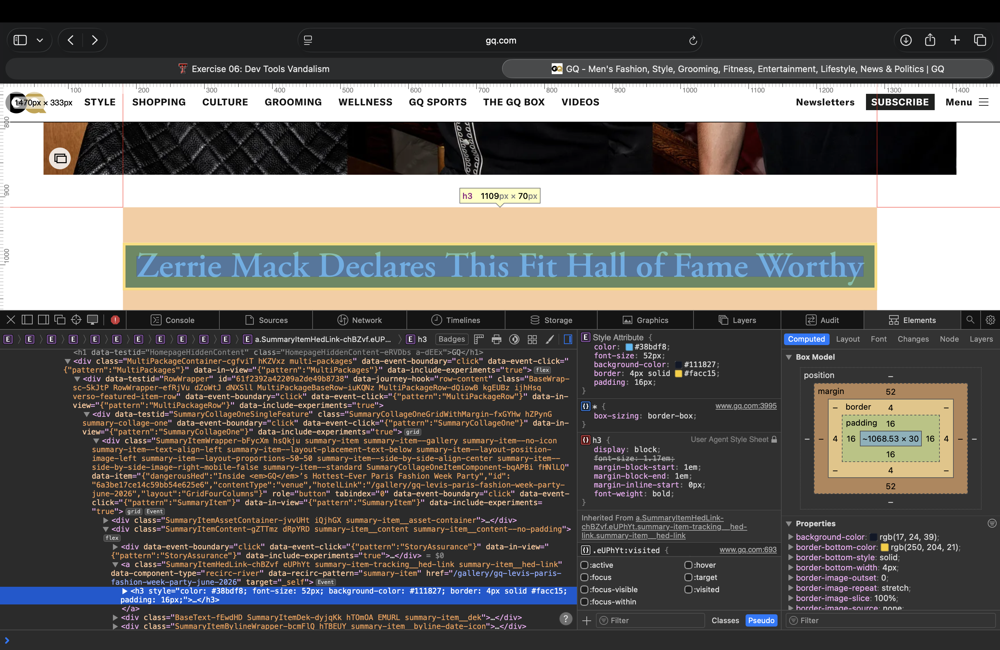

Dev Tools Vandalism
For this exercise, I modified GQ.com using browser developer tools. I changed a headline to “Zerrie Mack Declares This Fit Hall of Fame Worthy.”
I also changed CSS styles including color, font size, background color, border, and padding. These edits were temporary and local-only, so they did not change the actual GQ website.
